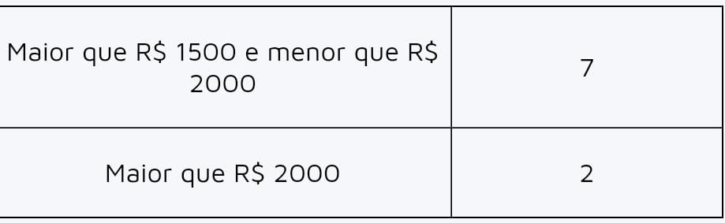
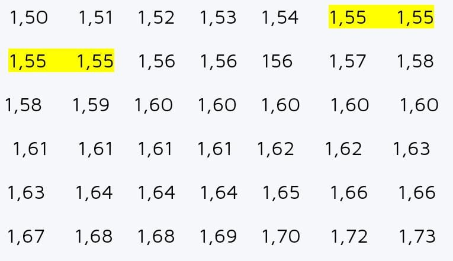

Alternativa C
Explicação: Ao realizar-se a soma da frequência absoluta dos usuários que marcaram entre 2 e 4 estrelas,
conclui-se que: 8 + 10 + 7 = 25.
Sabemos que 25 é um quarto de 100, pois 100 : 4 = 25.
Alternativa C
Explicação: Ao realizar-se a soma da frequência absoluta dos usuários que marcaram entre 2 e 4 estrelas,
conclui-se que: 8 + 10 + 7 = 25.
Sabemos que 25 é um quarto de 100, pois 100 : 4 = 25.
Alternativa C
Explicação>:Os funcionários que recebem, pelo menos, R$ 1500 estão nas duas últimas categorias:

Realizando a soma: 7 + 2 = 9.
Alternativa B
Explicação:
I → Verdadeira
Realizando a soma dos acessos na segunda-feira, temos:
80 + 100 + 30 + 40 = 250
II → Falsa
Somando o total de acessos, de segunda até sexta, ao site D:
40 + 60 + 30 + 40 + 80 = 250
III → Verdadeira
Somando o total de acessos, na sexta-feira, aos sites A, B, C e D:
50 + 80 + 60 + 80 = 270
Alternativa A
Explicação:Foram analisadas um total de 100 pilhas. Quando calculamos o total de pilhas
que duraram mais de 9 meses, temos: 25 + 33 + 20 = 78, logo, é correto afirmar que mais da metade
das baterias durou mais do que 9 meses.
Alternativa C
Explicação:Conhecemos como moda a idade que possui maior frequência absoluta, ou seja, que mais se repete.
Analisando a tabela, a idade que tem maior frequência absoluta é 19 anos.
Alternativa E
Explicação: Sabemos que, de segunda a sexta, são gastas 5 horas por dia com atividades escolares, ou seja,
5 · 5 = 25, e que, no sábado e domingo, é gasta 1 hora por dia, ou seja, 2 · 1 = 2. Sendo assim, de segunda a domingo, há gasto
um total de 25 + 2 = 27 horas.
Alternativa B

Com os dados em ordem, é mais fácil verificar que a frequência absoluta da altura de 1,55 é igual a 4, pois esse dado se repete
4 vezes.
Alternativa C
Explicação: Para calcular a frequência absoluta dos que responderam “não”, basta calcular 25% de 279.
0,25 · 279 = 69,75
Analisando as alternativas, esse número é maior que 50 e menor que 75.